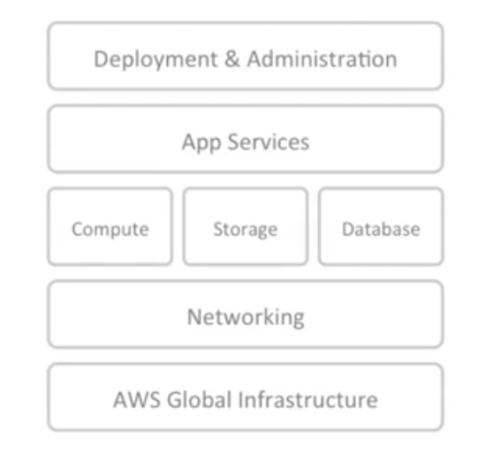
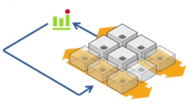
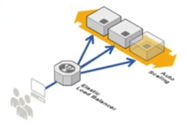
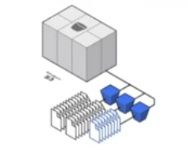
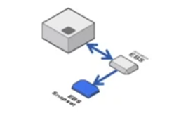
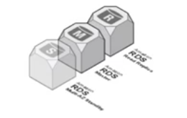
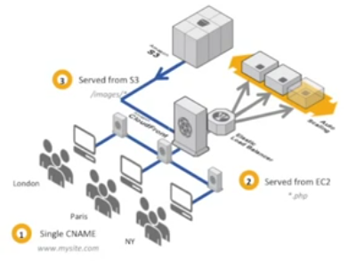
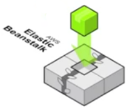

GDG LAGOS
Getting Deep with Git
What is Git and why all the 'hype'?
Feel free to ask your questions!
A bit of a background
Git was created in 2007 by Linus Torvalds ...
A bit of a background
I said 'a bit' ...
see wikipedia
What is Git?
Simply put, git is a source code management system.
Source control / Version control is the management of changes to documents, computer programs and other collections of information
What Git is not!
Neither is it...

Why should I care?
Git makes your life easier
Yes, it does!
Has this ever happened to you?
Now you don't need to worry about it!
That in itself is a winner for version control.
Reference Model

AWS Global Infrastructure
- Regions
- Availability Zones
- Edge Locations
Networking Services
Direct Connect
AWS provides a direct connection between your IT infrastructure and the AWS data centers.
With this, you can extend your VLANs and privately facing infrastructure into the AWS/Cloud
VPN
AWS provides you the ability to create your own VLAN on the Amazon Infrastructure and have a VPN connection across the internet.
Virtual Cloud
Create an isolated network off a section of the AWS Cloud where you can launch resources and have complete control over your networking environment
-
Route 53
Highly available and scalable Domain Name System that is extremely reliable and cost effective.
This is a global DNS Service that gives 100% request-reply guarantee.
Elastic Compute Cloud
Total of 23 Instance types available .Range from very small ( micro instances ) to very large computation ( cluster compute ) instances.Run windows or linux instances Save your configurations as custom image types (AMI) from which other machines can be launched. You have full control of your instance You can publish metrics to cloudwatch and have detailed stats on instance health Auto Scaling
Allows automatic re-sizing of compute clusters based on demandAllows you to define minimum and maximum instance pool size for when scaling up or down is needed Uses metrics gathered by Cloudwatch to drive the scaling Load Balancing
Distribute load across instances in multiple availability zonesThe Elastic Load balancer allows you to create highly scalable applications on the Amazon Cloud.It automatically checks the health of instances and takes them in or out of service Session StickinessThe load balancer routes requests to the same instance when a session is started on that instance.Simple Storage Service (S3)
An object storage platform that acts as a fundamental bedrock of many applicationsUnlimited storage of any type of data upto 5TB in sizeElastic Block Storage (EBS)
This is a high performance block storage device that can be mounted as drives on instancesWith flexible sizes, you have more than enough space for your application environmentThe EBS volume is private to your instanceThe operating system of an instance resides on the EBS volume and any launched instance will boot from this driveIntegrates with snapshotting featuresSnapshots of the EBS volumes can be taken for point in time restore or even used to launch another instance.Relational Database Service (RDS)
Provides Database-as-a-serviceManaging a production database can be a real pain, RDS alleviates this for you.Easily launch scalable and fault tolerant Mysql, Oracle or SQL Server databasesLike the EC2, the RDS allows you to launch instances based on classes (ie. micro, small, medium, large etc)CloudFront
This serves as a Content Delivery Network for static assets on the AWS stack.Easily distibute content to your users with low latency and high data transfer speeds.Elastic Beanstalk
Rapidly deploy your applications to the Amazon Cloud.The Elastic Beanstalk allows automatic creation of application environment and proceeds with application deployment.[ Intentionally left blank ]Nginx
Nginx is a fast and very flexible HTTP and Reverse Proxy Server built by Igor Sysoev in 2002.
The project started with a strong focus on high concurrency, high performance and a low memory footprintBasic Features
Nginx does a lot of the functions of a regular Web server and is excellent as a reverse proxy sitiing on your network.
- Serving static content
- Reverse proxying and caching
- Simple load balancing and fault tolerance
- Reconfiguration and upgrade of the nginx executable without a server restart
- Customizable access log formats
- Easily execute functions based on client addresses
- Media Streaming
- ... and many more
Thank you!
Glossary
Instance types- t1.micro - N3.177/hr ($0.020)
- m1.small - N9.50 ($0.060)
- m1.medium - N19.06 ($0.120)
- m1.large - N38.12 ($0.240)
- cc2.8xlarge - N381.2 ($2.40)
see http://aws.amazon.com/ec2/pricing/